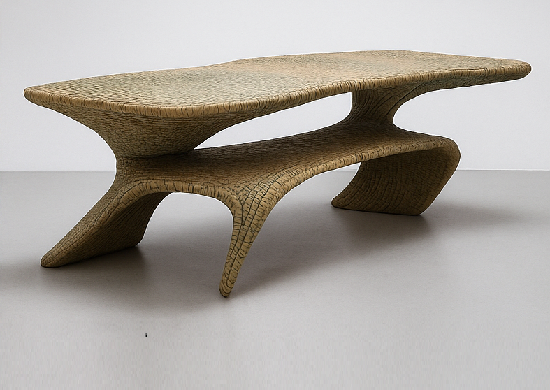
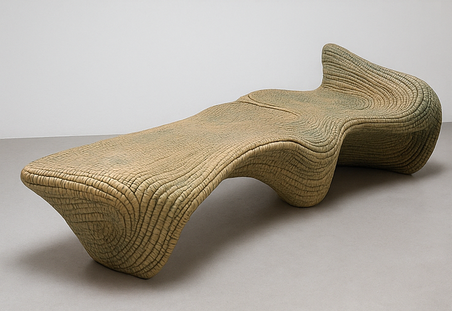
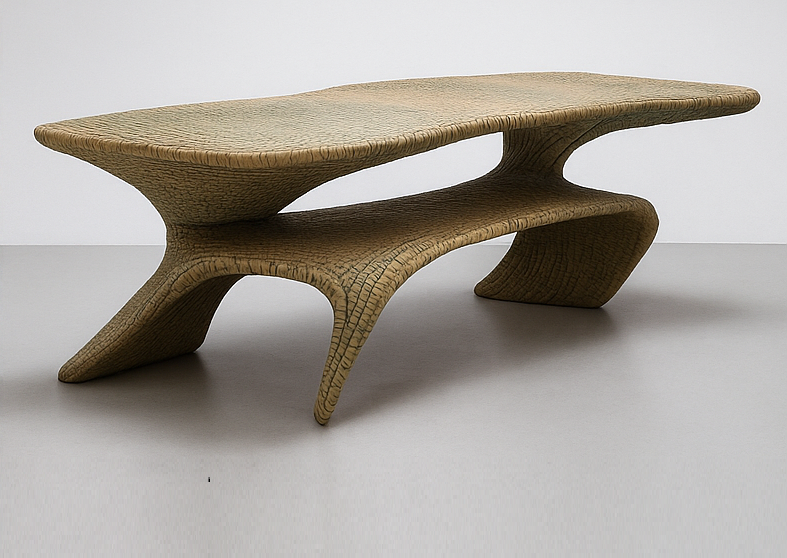
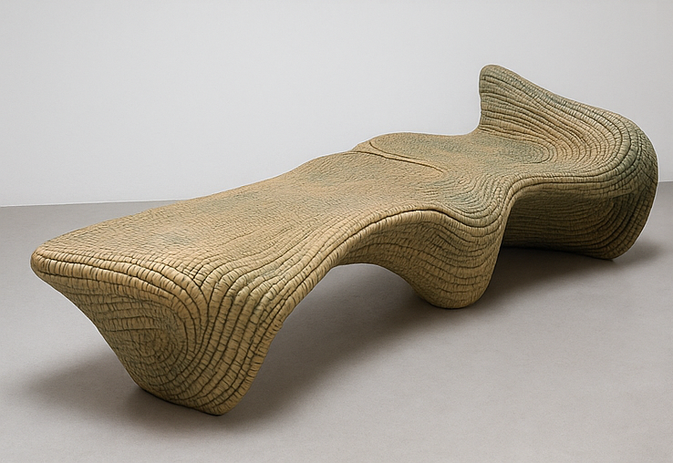
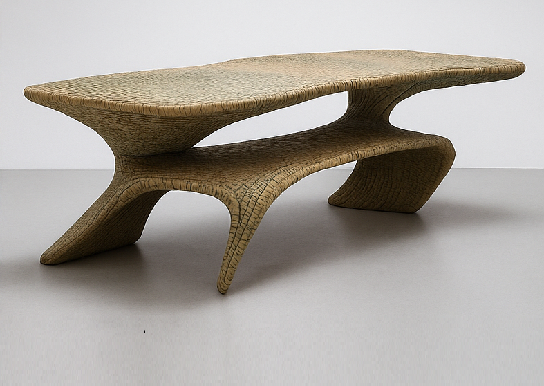
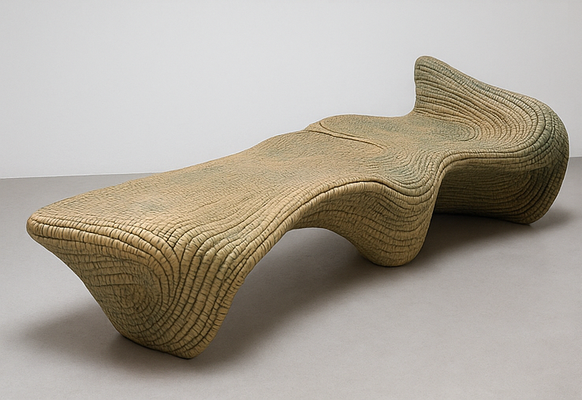

1.8.1, Contemporary and Parametric Geometries in Architecture- Project
Application of Topological surfaces in design
“The majority of architects don’t understand that there are infinite possibilities for
architecture in the future. There are no limits.”
Frei Otto
Below are some AI generated images for impression of local material and texture application.


Project Introduction
As an avant-garde and progressive approaches in architectural design,
application of topological surfaces and Contemporary and Parametric Geometries have brought professionals from a
vast number of fields together in the objective of designing and construction of buildings.
Subsequently, the application of such surfaces in design requires architects attention in mastering
parametric geometries in architecture and not just the classical solids.
You can view the assignment description document about project 02
(Application of Topological surfaces in design) below.
You can only view this file if you are signed in on your browser with the email you registered for this course.
Once you comlete working on the project, you can submit your work through the form you will find at this link: Project-02 submission form
Application of Geometry
Optional reading material
'A topological design process'. can be found below: You can only access this file if
you are logged in to the email address you registered for this course.
Optional Project
1.8.2, Design and Construction of Architectural Component/ fixture/ furniture
Application of Geometry
At the end of the course you are expected to be able to apply Shapes
(tessellation, et.) and Solids (regular and irregular) and descriptive geometry in practical projects/
prototypes. You should also incorporate your understanding of techniques, materials in designing and preparation
of prototypes of architectural components or interior details.
You will be in groups of up to five (minimum of two students per group) to execute this
project. You must apply knowledge and skills you gained during the geometry part of the course. The project
constitutes specific problem identifying, engaging with users, designing a solution and construction of a
prototype of a building/landscape component (exterior or interior). You need to provide detailed information of
your project's design concept, structure, material, techniques (Connections, treatment, etc.), and etc.
furthermore you need to incorporate consideration of sustainability for the life cycle of their project [ a,
Concept development, b, design implementation, c, construction (Assembly), d, use and maintenance, e,
demolition/recycle]
You can view the assignment description document about project 02
(Application of Geometry) below.
You can only view this file if you are signed in on your browser with the email you registered for this course.
You may also see examples from past years as a reference on the image slide below.

 


